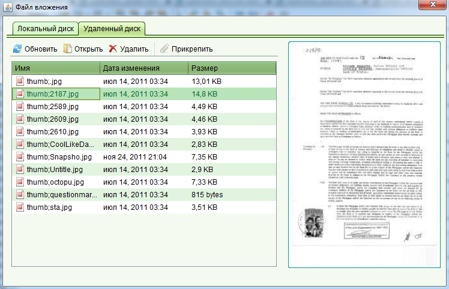
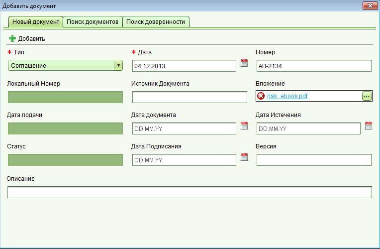

Добавление документа
Некоторые объекты в системе, такие как заявления, услуги, права нуждаются в сопроводительных документах.
Документы могут быть добавлены через функции поиска, выбора документа из предоставленного списка (например документы заявления)
или же созданы через форму документа.
Для создания или редактирования документа используется форма документа, в которой вы можете ввести необходимые атрибуты и прикрепить цифровую копию документа.
Все формы содержащие список документов используют один тот же компонент, что делает управление документами единообразным.
Ниже представлены основные шаги по добавлению нового документа в список:
-
Для добавления документа нажмите кнопку "Добавить" над списком документов.
-
В открывшейся форме заполните необходимые поля, при этом поля отмеченные звездочкой являются обязательными.
-
Прикрепите цифровую копию документа если она имеется. Для этого нажмите кнопку "..." в поле "Вложение".
В появившемся окне найдите файл на локальном или удаленном диске и нажмите кнопку "Прикрепить".

-
По окончанию нажмите кнопку "Добавить" для добавления документа в список.

Форма документа
Смотрите также: